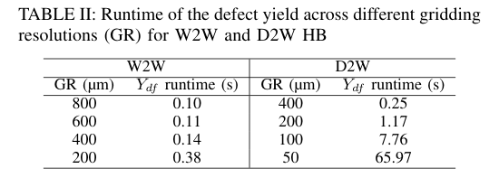
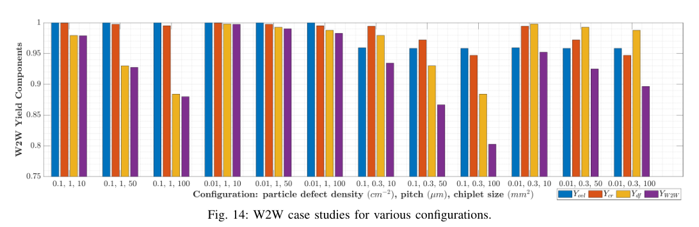
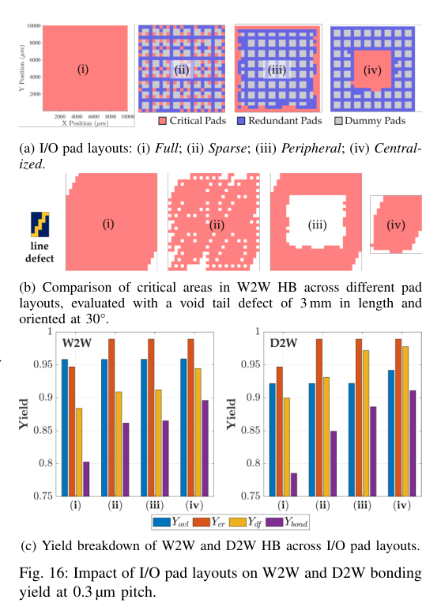
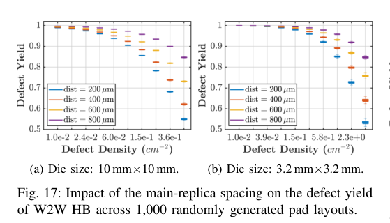
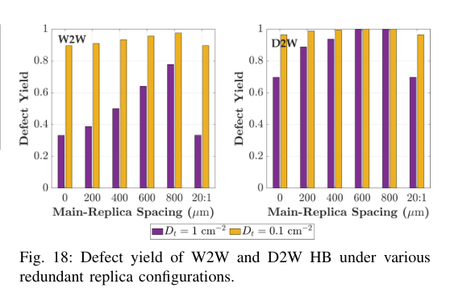

Zhichao Chen, Puneet Gupta · IEEE Transactions on Computer-Aided Design of Integrated Circuits and Systems · 2026 · 原文 · PDF
这篇文章题为《YAP+: Pad-Layout-Aware Yield Modeling and Simulation for Hybrid Bonding》（YAP+：面向混合键合的感知焊盘布局的良率建模与仿真），发表日期约为 2025 年底至 2026 年初。文章主要解决的是三维集成电路（3D-IC）制造中，由于混合键合（Hybrid Bonding, HB）工艺引发的多种物理失效机制导致的良率预测问题。
以下是按论文逻辑分章节的详细解析。
第一部分：引言与背景（Introduction & Background）
问题背景与系统全貌
随着摩尔定律（Moore's Law，即集成电路上可容纳的晶体管数目约每隔两年翻一倍的经验规律）在二维平面上的物理和经济缩放达到极限，三维集成电路（3D-IC） 成为继续提升芯片性能的关键。3D-IC 的核心是将多个设备层垂直堆叠。背景补充： 在 3D-IC 系统中，数据和电力需要穿过垂直的层间互连，常见部件包括用于穿透硅基板的硅通孔（TSV），以及用于将两片晶圆或芯片的表面金属焊盘直接对贴连接的技术。
混合键合（Hybrid Bonding, HB） 就是目前最先进的对贴连接技术。它在室温下先将介质层（如二氧化硅，）对准贴合，再通过高温退火使铜（Cu）焊盘膨胀并形成物理与电学连接。HB 的互连密度极高（每平方毫米可达 1 万至 100 万个连接），节距（Pitch，相邻两个焊盘中心之间的距离）可小至亚微米级别。HB 主要分为两种方式：
- 晶圆对晶圆（Wafer-to-Wafer, W2W）： 两整片晶圆直接对贴。生产效率高，对准精度高，但只要某一层晶圆有缺陷，整个垂直堆叠的芯片就会失效。
- 芯粒对晶圆（Die-to-Wafer, D2W）： 先把顶层晶圆切割成芯粒（Die，又称 Chiplet），测试挑出良品（Known-good die），再贴到基础晶圆上。灵活性高，整体良率好，但工艺更复杂。
现有问题：
由于 HB 工艺复杂，其良率（Yield，即制造出合格芯片的概率）受到多种物理机制的影响。现有的系统级良率模型往往过于简化，例如直接把键合良率当作一个常数。此外，现代芯片上包含数百万个 I/O 焊盘（I/O Pads），它们在电路中扮演不同角色：
- 关键焊盘（Critical pads）： 负责核心信号传输，坏一个就导致整个芯片报废。
- 冗余焊盘（Redundant pads）： 备用焊盘，用于容错设计。
- 虚拟焊盘（Dummy pads）： 背景补充： 由于化学机械抛光（CMP）工艺要求表面金属密度均匀，为了防止抛光过度或不足，会在空白区域填入不通电的金属块，这就是虚拟焊盘。它们的失效不影响芯片功能。
作者怎么做：
作者提出并开源了一个名为 YAP+ 的近解析（Near-analytical）良率建模框架。它不仅综合考虑了多种物理失效机制，还能“感知焊盘布局（Pad-layout-aware）”，即能够读取真实的二维物理布局中上述三类焊盘的位置和比例，计算出更准确的良率。
第二部分：混合键合的关键失效机制（Overview of Failure Mechanisms）
本节详细解释了 YAP+ 所考虑的三种主要物理失效机制，这些机制是由硬件事实和物理定律强制约束的。
1. 覆盖对准误差（Overlay Errors）
在将上下两层铜柱对准时，由于机械臂校准误差或热应力导致的晶圆翘曲（Warpage），上下焊盘无法完美重合。这会导致两个问题：一是有效接触面积（，单位：原文未说明；下标 原文未定义/未说明）减小，导致电阻增大；二是相邻两个不同连接的铜焊盘之间的关键距离（Critical Distance, ，单位：原文未说明）缩小，容易被电压击穿。为了容忍对准误差，设计上通常会把顶部焊盘做得比底部焊盘小。
2. 铜凹陷变化（Cu Recess Variations）
在键合前的 化学机械抛光（CMP） 阶段，由于铜和介质材料的硬度不同，铜表面通常会形成凹陷（Dishing，即低于介质层表面）。
- 过度凹陷： 导致退火加热时，铜膨胀的体积不足以填补缝隙，无法形成电连接（断路）。
- 凹陷不足或突出： 高密度的铜在加热膨胀时会产生巨大的剥离应力（Peeling stress），如果应力过大，会把脆弱的介质层（）硬生生撑开，导致介质层剥离（Delamination）。
3. 颗粒缺陷（Particle Defects）
制造过程中的摩擦或切割会产生微小的灰尘颗粒。
- 在 W2W 键合 中，晶圆首先在中心接触，然后像波浪一样向边缘扩散贴合（键合波，Bond wave）。如果中间有一颗灰尘，它不仅会撑开一个主空洞（Main void），还会在键合波的推动下形成一条长长的“空洞尾巴（Void tail）”。一个几微米的颗粒可能导致几毫米长的无效区域。
- 在 D2W 键合 中，由于芯粒面积小，通常不会形成长尾巴，只会形成局部的“主空洞”。空洞覆盖到关键焊盘就会导致短路或断路。
第三部分：YAP+ 良率模型的设计与数学推导（YAP+ Yield Model）
这是文章的核心部分。作者假设这三种失效机制是相互独立的，因此总良率等于三者良率的乘积。
A. 对准模型（Overlay Model）
作者假设随机对准误差服从均值为 0、标准差为 （衡量工艺波动程度的参数，单位：原文未说明；下标 表示顶）的正态分布。
- 公式 (1)： 定义了单个焊盘的存活概率 （无量纲；下标 原文未定义/未说明）。其中 是上下焊盘间的随机对准误差（单位：原文未说明）， 是保证焊盘存活的最大允许不对准量（单位：原文未说明）。
- 公式 (2) 与系统误差： 系统误差 （单位：原文未说明）由平移（，单位：原文未说明；下标 表示方向）、旋转（，单位：原文未说明）和放大（，单位：原文未说明）组成。放大误差与晶圆翘曲 （单位：原文未说明）呈线性关系：， 是拟合参数（单位：；下标 原文未定义/未说明）。
- 公式 (3) 与 (4)： 计算晶圆上坐标 处的系统对准误差 。 和 （单位：原文未说明）由平移、旋转和放大误差线性组合而成。
- 公式 (5)： 计算接触面积 。输入是顶/底焊盘半径 （单位：原文未说明；下标 表示顶/底），偏置距离 ，以及由相交几何决定的夹角 （单位：原文未说明；下标 表示顶/底）（原文未给出明确角度推导公式，为纯几何推导结果）。
- 公式 (6)： 作者通过设计约束推导 的解析解：要求接触面积大于面积系数 （无量纲；下标 原文未定义/未说明）与顶面面积 的乘积；且相邻关键距离 大于距离系数 （无量纲；下标 原文未定义/未说明）与理想距离 的乘积（ 为节距，单位：原文未说明； 为顶/底焊盘直径，单位：原文未说明；下标 表示顶/底）。公式为这两者的极小值。
- 公式 (7) 与 (8)： 整个芯片（Die）的对准存活率 （无量纲；下标 原文未定义/未说明）取决于其内部最薄弱的互连（即对准最差的那个焊盘，包含 个关键焊盘（无量纲；下标 原文未定义/未说明）和 个冗余焊盘（无量纲；下标 原文未定义/未说明））。系统总对准良率 （无量纲；下标 原文未定义/未说明）是晶圆上所有 个芯片（无量纲）存活率的平均值。
B. 铜凹陷模型（Cu Recess Model）
假设 CMP 后的上下焊盘高度之和 （单位：原文未说明；下标 原文未定义/未说明）服从均值为 （单位：原文未说明）、方差为 （单位：原文未说明）的正态分布。以介质表面为 0，凹陷为负，突出为正。安全高度范围界定为 （单位：原文未说明；下标 原文未定义/未说明）。
- 下限 由退火温度和铜的膨胀体积决定（原文以描述带过，未给具体公式）。
- 上限 的临界条件是介质剥离。公式 (9) 定义了最大可容忍剥离应力 （单位：原文未说明；下标 原文未定义/未说明）。这是基于物理力学推导的，其中 是基于粗糙度的归一化有效接触面积（单位：原文未说明；下标 及上标 原文未定义/未说明）， 是微凸体高度标准差（粗糙度）（单位：原文未说明；下标 原文未定义/未说明）， 是微凸体顶部半径（单位：原文未说明）， 是接触面材料（如二氧化硅）的杨氏模量（衡量材料刚度）（单位：原文未说明；下标 原文未定义/未说明）， 是全接触下的键合能（单位：原文未说明）， 是表面材料厚度（单位：原文未说明）。
- 公式 (10) 与 (11)： 实际剥离应力 （单位：原文未说明；下标 原文未定义/未说明）被简化为由铜密度和高度决定的拟合模型：。其中 是铜图案密度（无量纲；下标 表示铜），（单位：原文未说明；下标 原文未定义/未说明）和 （单位：原文未说明）是经验拟合参数。必须满足 以推导高度上限 （单位：原文未说明）。
- 公式 (12) 至 (14)： 定义了高度上限 。基于正态分布积分计算单焊盘存活率（Eq 13），再结合关键焊盘数量和冗余焊盘数量（分为 组（无量纲；下标 原文未定义/未说明），每组 个复本（无量纲））的概率乘积，得出铜凹陷导致的总良率 （无量纲）。
C. 颗粒缺陷模型（Defect Model）—— 架构与算法的核心创新
缺陷形状不规则，且芯片上的焊盘布局复杂，无法用简单的解析公式表达“一个灰尘会弄坏几个焊盘”。作者引入了计算机视觉中的形态学膨胀（Dilation）算法来计算关键区域（Critical Area, ，单位：原文未说明）。
- 基础概念：膨胀。 把芯片版图网格化（例如 400µm×400µm 一个格子）变成二进制位图（Bitmap）。把缺陷（如空洞尾巴）作为一个“结构元素（Structuring Element）”。膨胀操作就是用这个缺陷形状去“扫”焊盘位图，算出的新面积就是“只要缺陷落在这里，焊盘就会坏”的危险区域。
- 公式 (15) 与 (16)： 经验拟合模型。主空洞半径 （单位：原文未说明；下标 原文未定义/未说明）和空洞尾巴长度 （单位：原文未说明；下标 原文未定义/未说明）分别与颗粒距圆心距离 （单位：原文未说明）和颗粒厚度 （ 单位：原文未说明；下标 原文未定义/未说明）成正比。 是斜率/截距拟合参数（单位：原文未说明；下标 原文未定义/未说明）。
- 公式 (17) 与 (18)： 颗粒厚度分布概率密度函数 （单位：原文未说明）。其中 是最小颗粒厚度（单位：原文未说明）， 是单位面积总颗粒数（单位：原文未说明）， 控制分布形状（无量纲）。推导出空洞尾巴长度的分布函数 （单位：原文未说明）。
- 公式 (19) 至 (21) (膨胀算子 )： 关键焊盘的危险区 （无量纲；下标 原文未定义/未说明）是直接膨胀的结果。对于一组冗余焊盘（例如一主一备），只有当缺陷“同时”覆盖这两个焊盘时才会失效，因此其危险区 （无量纲；下标 原文未定义/未说明）是主备焊盘分别膨胀后位图的交集（）。整个芯片的关键面积 （单位：原文未说明）是这两类危险区的并集（），其中 首次出现定义为向外方向（outward orientation，单位：原文未说明）。
- 公式 (22) 至 (24)： 基于泊松良率模型，计算出平均引发失效的缺陷数 （无量纲），进而求出缺陷良率 （无量纲；下标 原文未定义/未说明）。最后综合上述三项得出总良率 （无量纲）。
E. D2W 模型的扩展
公式 (25) 至 (30) 是针对芯粒到晶圆（D2W）工艺的修正。由于 D2W 芯粒小，不产生空洞尾巴，只考虑主空洞。模型逻辑类似，但概率密度函数 （单位：原文未说明）的积分边界和面积计算全部改为仅针对圆形的主空洞。
第四部分：YAP+ 模拟器与模型验证（Simulator and Model Validation）
为了证明上述复杂的数学推导有效，作者用 C++ 编写了一个基于蒙特卡洛（Monte Carlo）方法的开源模拟器。
- 工作流： 对于每种设定的参数（对准分布、缺陷密度等），模拟器生成成千上万个虚拟晶圆/芯粒（按公式 31 计算尾巴内的空洞数量 （无量纲），按公式 32 计算尾巴面积 （单位：原文未说明）），然后逐一检查每个焊盘是否满足对准要求、凹陷应力要求、且没有被空洞覆盖。
- 架构与 EDA 的工程权衡： 在膨胀算法中，网格分辨率（Gridding resolution） 是个关键的配置参数。在跨层接口传递过程中，网格化会带来几何近似损失（例如 400µm 或 100µm 的网格分辨率会导致关键区域面积计算的近似，从而产生信息损失）。网格越小（如 50µm）越精确，但位图变大导致运算极慢；网格过大则失真。作者通过仿真（表 II）发现，对于 W2W 和 D2W，分别设置 400µm 和 100µm 可以在保持准确率的同时，使 YAP+ 解析模型比蒙特卡洛模拟器实现 1000 倍的运行速度提升（几秒 vs 几个小时）。这使得在架构探索阶段快速循环优化良率成为可能。

Table II · 原文 PDF 第 9 页
第五部分：实验结果与架构协同设计（Experimental Results / Case Studies）
这部分展示了跨层的体系结构—EDA 协同分析：架构师决定的引脚节距、芯片尺寸和平面布局，如何通过底层物理失效机制反映到良率上。
A/B. 颗粒密度与键合节距的影响（图 14、15）

Figure 14 · 原文 PDF 第 10 页
- 现象： 将节距从 1µm 缩小到 0.3µm，会导致良率显著下降。特别是在 D2W 中，小节距对对准误差极度敏感。
- 原因： 节距越小，不仅容忍对准偏差的阈值越小，且芯片上的焊盘总数急剧增加，这使得整个芯片暴露在铜凹陷变化风险中的概率呈指数上升。
C. 芯粒尺寸的权衡（系统良率 vs 单片良率）
- 现象： 芯粒尺寸越大（如从 10 增加到 100 平方毫米），单片良率必定下降，因为包含了更多的引脚和更大的缺陷暴露面积。
- 架构折中： 假设我们要构建一个 1000 平方毫米的 2.5D 系统。是用 10 个 100 平方毫米的大芯粒，还是 100 个 10 平方毫米的小芯粒？计算系统累积良率 （ 与 均为无量纲；上标 原文未定义/未说明）发现，虽然大芯粒单片良率低，但由于需要的组装次数少，系统总良率反而稍微高一点。这提示架构师，盲目将芯片切得太碎可能会被封装组装的良率损失所反噬。
D. I/O 焊盘布局的影响（图 16）
架构师如何摆放这些引脚极大地影响容错性。作者对比了四种布局：均匀全覆盖（Full）、稀疏分布（Sparse）、周边分布（Peripheral，2.5D 路由常用）、中心分布（Centralized，类似 HBM 内存常用）。

Figure 16 · 原文 PDF 第 11 页
- 结论： 包含冗余和虚拟焊盘的布局良率均高于全关键焊盘布局。令人反直觉的是，中心分布（Centralized）的抗缺陷良率（）最好。
- 底层推理： 这是由于膨胀算法揭示的几何重叠效应。当关键焊盘紧密扎堆在中心时，它们膨胀后产生的“危险区”高度重叠。这意味着一个大空洞砸下来，不管覆盖中心多少个焊盘，都只算毁掉一次芯片。而如果像周边分布那样把引脚散开，危险区总面积反而变大了，增加了踩雷的概率。
E. 冗余复本的设计策略（图 17、图 18）
芯片架构中常用冗余（Redundancy）来提升良率。

Figure 17 · 原文 PDF 第 12 页
Figure 18 · 原文 PDF 第 12 页
- 架构选择： 共享冗余（N个主引脚共用一个备用）还是 1:1 专用冗余？主备之间的物理距离（Main-replica spacing）应该留多远？
- 验证结果： 在 HB 工艺中，空洞缺陷通常非常大（长达毫米级）。如果主备焊盘挨得太近（例如小于 200µm），一个大空洞会把主备同时吞噬（失效机制中的“交集”非空），冗余形同虚设。因此，共享冗余几乎无效。必须采用专用冗余，且主备物理距离必须大于主导缺陷的尺寸（例如 W2W 需 >400µm，D2W 需 >200µm）才能实质性提升良率。这种结论直接将 EDA 层的几何特征反馈给了系统架构的容错策略设计。
全文总结（Conclusion）
主线脉络：
3D-IC 的发展遇到了混合键合良率难以预测的阻碍（问题）。过往忽略具体布局的简化模型不适用，因此作者提出了 YAP+，它创新性地将机械学上的对准/铜凹陷物理约束，与一种基于计算机视觉“膨胀”算法的布局几何特征相结合（设计与方法）。通过蒙特卡洛仿真器的严格校准，YAP+ 实现了精度与速度的双赢（1000倍加速）。最终，利用该工具开展的案例研究，为芯片架构师提供了违反直觉但物理上合理的指导：在超高密度互连中，I/O 焊盘应该尽量扎堆集中放置，且冗余焊盘必须拉开足够大的物理距离，才能有效抵抗制造缺陷（结果与解决的问题）。
关键假设与局限性：
- 极度依赖经验参数： 模型中包含大量带有下角标的拟合参数（如 等），这些参数在现实中需要通过流片并在洁净室进行昂贵的实际测量才能准确获取。如果制程发生变更，参数需重新标定。
- 统计分布假设： 假设所有误差（如对准和抛光高度）均服从理想的正态分布，可能无法准确捕捉实际工厂中长尾的、系统性的设备漂移异常。
- 系统良率评估仅简单使用了 的连乘，未考虑芯粒内部逻辑本身的制造良率损失，这在评估大型系统时是一种过度简化的上层推断。